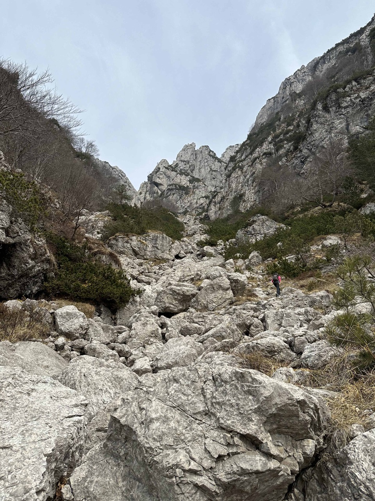
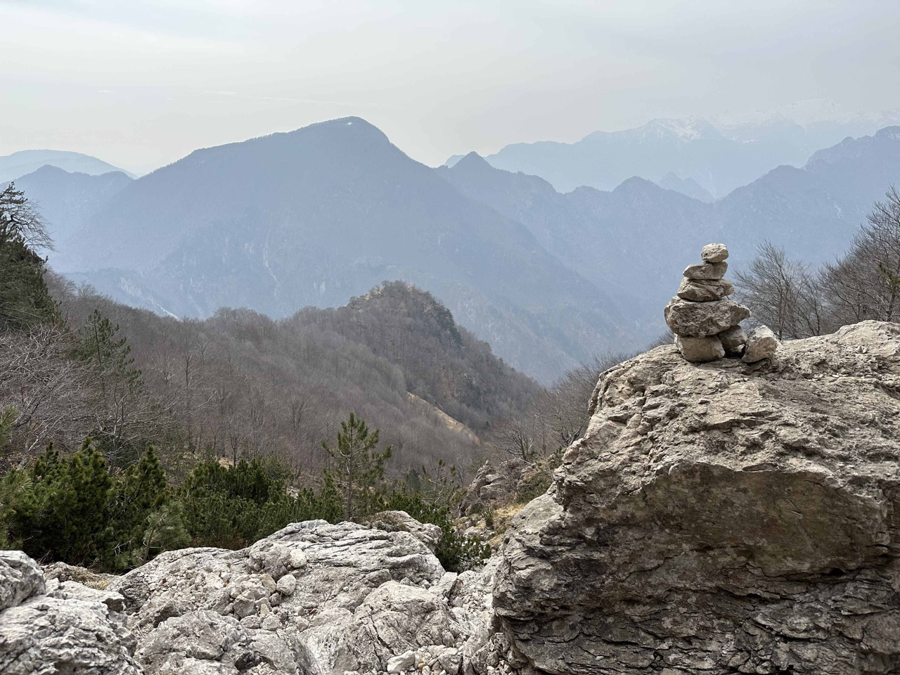
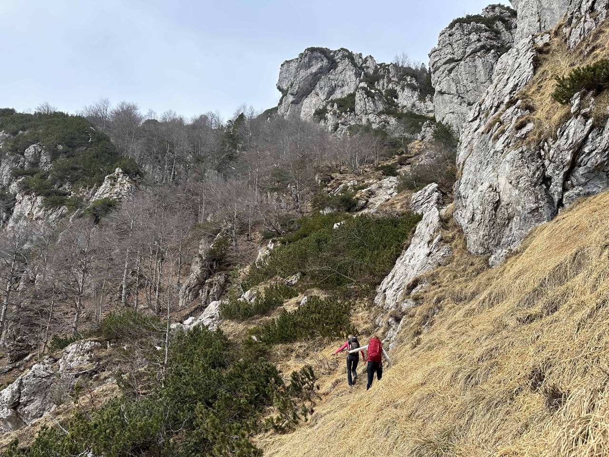
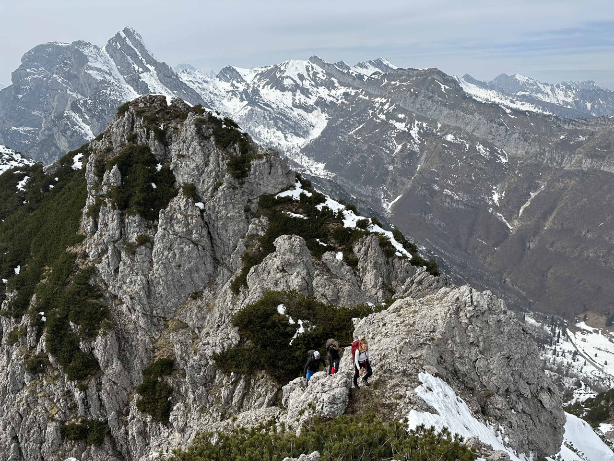
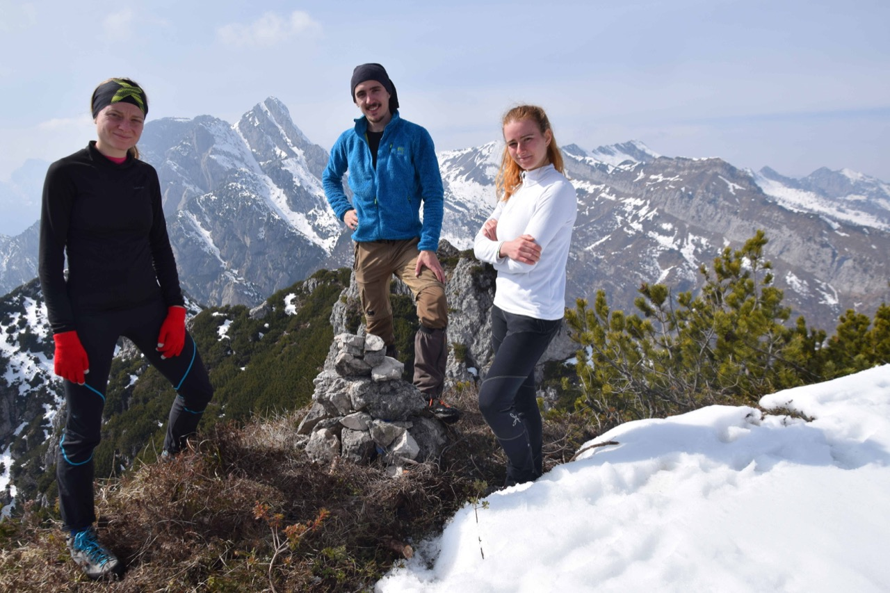

Forcella Mincigòs
NUOVO
Da Tramonti di Sopra per il rug dal Giavons (19.03.23)
Partiamo da Tramonti di Sopra e con il 386 raggiungiamo la ex stalla Giavons di Mezzo; da lì tagliamo per il bosco, per dove doveva esserci la traccia segnata sulla tabacco, per entrare nel rug dal Giavons, che risaliamo fin sotto le pareti.
C'avviciniamo alle crode.
Uno sguardo all'indietro, verso il Cuel da la Luna e il Pizzo Lovet, con forcella Dodesmala proprio sopra l'omino, a metà fra il Mosean e la cresta che sale al Corda. Il cocuzzolo boscoso a centro foto è il Cocolâr.
Finalmente arriviamo alla claupa, punto in cui si traversa verso sinistra per andare a riprendere il canalone.
Dopo il traverso noi ci siamo tenuti sulla destra, per prendere il canale che porta alla forcella q1669 a ridosso della cima, che oppone però una paretina di II grado. In alternativa si può prendere il canale più a sinistra che porta alla forcella q1648 fra le antecime q1682 e q1701, ma tocca poi appena scendere in versante Nord per risalire (vedi relazioni).
Arriviamo al macigno che ostruisce il canale: bisogna arrampicare sulla paretina di sx: sono circa 10m di II grado, quasi verticali ma su roccia ottima e ben appigliata.

Negli ultimi metri il canale si restringe ancora.
Calchiamo la panoramica e breve cresta e finalmente arriviamo in cima!
 Verso la val di Fisâr e il Roppa Buffon: appena visto, messo subito in programma una gita con salita per la val di Fisâr e discesa per la via normale!
La cima svettante a destra è il Frascola, con il canalone percorso dal CAI 392, mentre quella mugosa e bianca in primo piano è la q1682 del Giavons; poco sopra di essa, lungo la cresta che scende dal Frascola verso Sud, il Ciuculon dai Alaç. Sullo sfondo, in mezzo alla foschia, da sx a dx, si notano forcella Dodesmala, Corda, Meledon da la Meda, Spicion e Rupat (le due cime gemelle), forcja dal Poul (proprio sopra il Ciuculon dai Alaç), Maglina, Dosaip.
Torniamo indietro per la stessa strada.